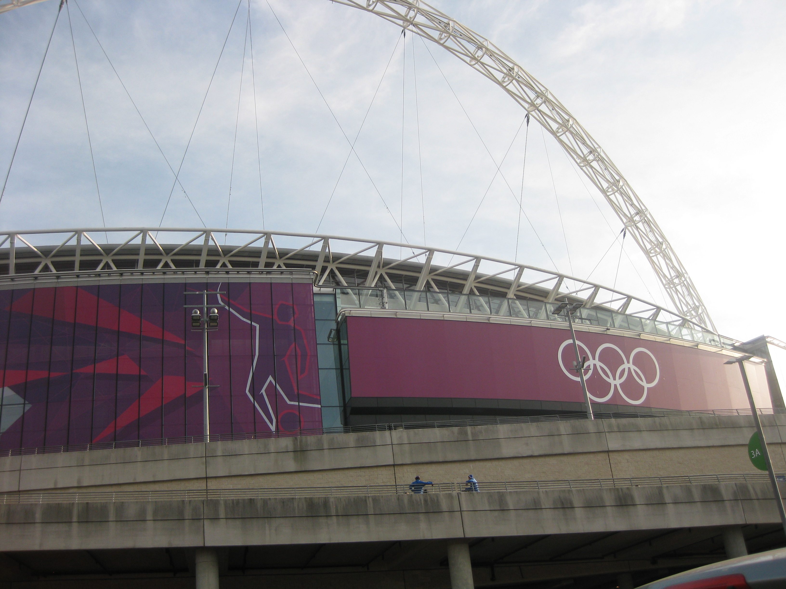

Shift 15 Aqua C239 Ford Galaxy
Saturday 11th August 2012
For the first time Epping Station let me down. The car park was full when I tried to park at 2.00pm. I headed off
towards Newbury Park with the idea of checking out Debden Station car park en route. Fates were conspiring against me as there was an accident
of the road out of Epping and we crawled through with the police direting traffic. There was space in Debden so I arrived at FDO in plenty of
time at 3.30pm. I was asked if I would drive an MPV and I said yes so I was assigned to the Aqua group. One Cajun Chicken ciabatta later
and with a standalone SatNav signed for we were upstairs watching the Football final at Wembley.

One of our number had used the standalone SatNav before and gave us all a tutorial. It eemed simple enough to use. At 4.15pm Aqua were tasked to
go to Wembley. It seemed a litle late to be sending us but off we went. Tried to use the SatNav on the dash but it kept falling over so it had
to go on the windscreen which made it difficult to reach. The system wasn't properly programmed for the Olympic Lanes, and had no idea how
Wembley had been cordoned off for security purposes for the Games, so most of us spend ages, driving round and round the Wembley area, trying to
get into the staging area. I finally made it, and was one of the first of our lot to arrive.
Most of the crowd had long gone, but apparently there were still guests in the hospitality boxes. I got a Mexican family in the back of my
Galaxy, who were very happy because Mexico had beaten Brazil in the final. We were headed initially for the Hilton on Park Lane, but they
changed their mind, and I ended up taking them to ExCel. From there I was tasked to Eton Manor as they were busy. I didn't have long to wait
until I had a full Galaxy full. As I got to Parliament Square, I realised they had started preparing the Marathon route early and I couldn't
go up Great George Street and Birdcage Walk. No problem, I thought, I'd go along Victoria Street. But, that idea was buggered as Vctoria Street
was closed off due to a gas leak. I had to turn off into the side streets, some of which are one way. The Sat Nav was very slow to catch up,
and wasn't much help. A few of the clients had worked out we wern't where we were supposed to be, and I just told them it was a minor detour
because of the Marathon, even though I wasn't entirely sure where we were. I stopped at a set of traffic lights and looked out to my right,
only to realise I was looking at the All Bar One wine bar we frequent when working at Laing's. I suddenly knew exactly where I was - turn
right and then right again and I was on Grosvenor Place heading to Hyde Park Corner. The punters never knew I was unsure where I was!